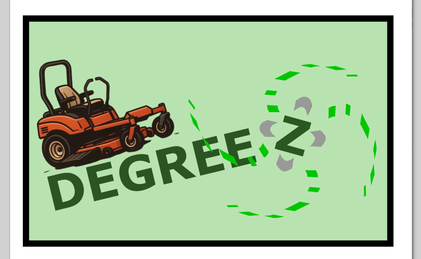
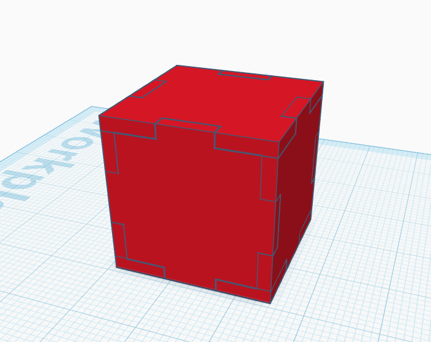

Mans Datorikas Portfolio
Sveicināti Manā Datorikas Portfolio
Šajā portfolio ir apkopoti mani šī gada datorikas darbi un apgūtās prasmes. Izmantojiet augšējo navigāciju, lai apskatītu it visu, sākot ar excel izklājlapu apstrādi un beidzot ar 3d projekta realizāciju. Lapas apakšā varat arī paskatīt papildus darbus, ieskaitot manu HTML pārbaudes darbu, un manu excel pārbaudes darbu kurā var redzēt manus izcilos aprēķinus.

Tekstapstrāde
Word dokumentu apstrāde
Microsoft Word ir viena no populārākajām tekstapstrādes programmām, ko izmanto dokumentu, referātu un citu rakstu darbu noformēšanai. Datorikas stundās tika apgūta teksta formatēšana, stilu lietošana un dokumentu struktūras izveide.
Excel izklājlapu apstrāde

Microsoft Excel nodrošina jaudīgus rīkus datu analīzei, tabulu veidošanai un matemātisko aprēķinu veikšanai. Apguvām formulu, funkciju (piemēram, SUM, AVERAGE, IF) lietošanu un diagrammu ģenerēšanu datu vizualizācijai.
Datorgrafika
Rastra grafika - GIMP
Manis veidots/apstrādāts attēls programmatūra GIMP
Vektorgrafika - Inkscape
Manis veidotais logo programmātūra Inkscape

Mans Tinkercad projekts un video par to
Tinkercad
Tinkercad ir viegli lietojama tiešsaistes programma 3D modelēšanai un dizainam. Sava projekta ietvaros es izmantoju Tinkercad, lai izveidotu 3D modeli, kurš redzams augstāk, un pēc tam to prezentēju savā video darbā. Tā ir lieliska platforma, lai apgūtu 3D modelēšanas pamatus un īstenotu savas radošās idejas.
Manis veidotais 3d kubiņš:

Video klips par ši projekta realizēšanu:
Šis video ir veidots programmā "CapCut" CapCut ir populāra un daudzpusīga video rediģēšanas programma, kas ļauj viegli izveidot un apstrādāt video. Šajā lapā redzamais video tika montēts, izmantojot CapCut sniegtās iespējas — dažādus efektus, pārejas un rīkus, kas palīdz izveidot dinamisku un saistošu saturu
Piemērs izklājlapu aprēķiniem: Lejupielādēt aprēķini.xlsx